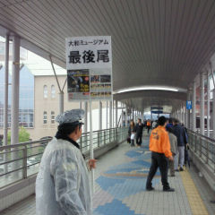
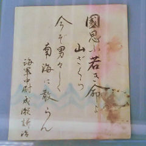
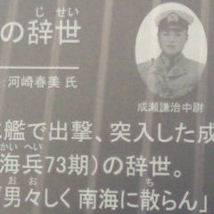

２０１０年
１１月２２日
平日の月曜日。
朝、七時前に
雨のため
今日の仕事を中止に
するという
電話があった。
それで、呉まで
「はやぶさ」を
見に行くことにした。
日雇い労働者から
観光客へと
華麗なる転身。
海沿いの国道を
浜田さんの
ベストアルバム
「The Last Weekend」を
聴きながら
車を走らせる。
少し離れて呉線が
走っている。
列車見張員だったころに
配置についた踏切や
特に名前はないけれど
見覚えのある
緩くカーブした
部分などを通ると
その場所に
結びつけられた
感覚と記憶を
少しずつ思い出す。
昼前に呉に着く。
はやぶさは
撮影禁止なので
その映像はない。
長い時間、待ち行列に
並んで、見学できたのは
わずか数秒（笑）。
そのあとは、
ついでに常設の
展示を見る。
ちょうど、この時期
ＮＨＫ（日本再放送協会）で
「坂の上の雲」を
再放送していた。
（戦争を美化した
ドラマは
見たくはないが、
政岡子規が
登場するので
見ることにした。）
小さな漁村だった
呉が海軍鎮守府として
発展する歴史とダブって
頭の中でキャラが
勝手に動く。（妄想）
次の日の火曜日は
我が国では
祝日で仕事は
休みだった。
しかし、夕方、
テレビをつけると
隣の国では大変な事に
なっていて悲しかった。


國思ふ若き命よ
山ざくら
今ぞ男々（をを）しく
南海に散らん
海軍中尉
成瀬謙治